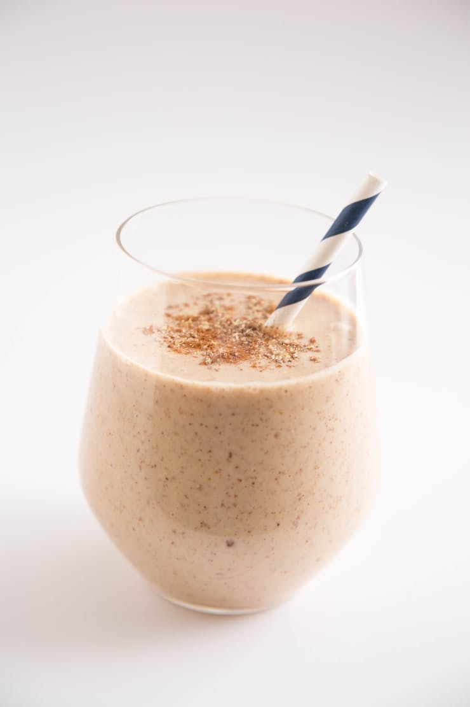

Banana Bread Protein Shake
Serves 1
Main Protein Source: Almond butter + raw cashews
Protein Boosters: Ground flax seed + whole oats
Imagine your favorite banana bread whipped up into a thick and nourishing drink — that's what you get with this protein shake.

Recipe
Combine 3/4 cup almond milk, 2 tablespoons almond butter, 1/4 cup raw cashews (soaked overnight), 1 medium banana (cut into chunks and frozen), 2 tablespoons whole oats, 1 tablespoon ground flax seed, 1 pitted dried date, and a sprinkle of cinnamon in a blender, then process until smooth. Top with an extra sprinkle of cinnamon for serving.